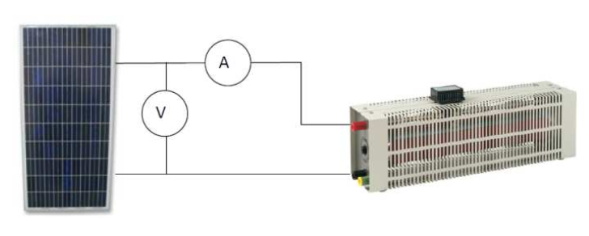
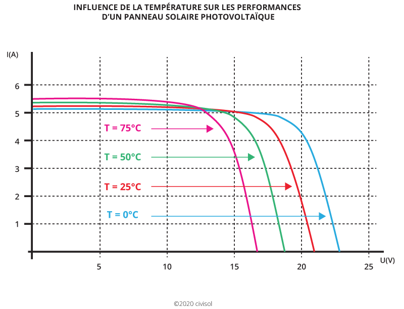
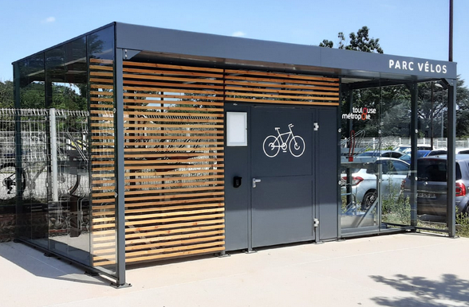
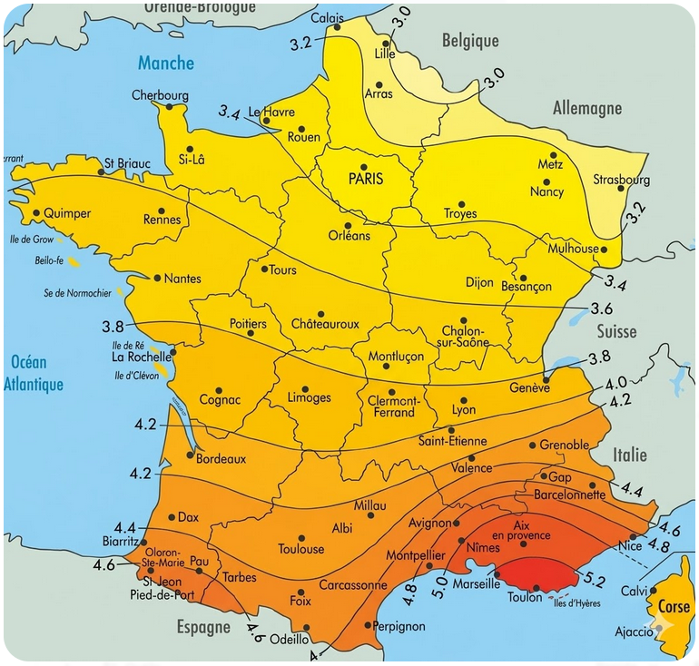

🎯 Compétences et objectifs
CO3.1
Comprendre le comportement électrique d'un panneau photovoltaïque (courbes I = f(U) et P = f(U))CO3.3
Dimensionner une installation photovoltaïque autonome (panneaux, batteries, régulateur, onduleur)Situation : alimenter en énergie électrique un local vélos + trottinettes du lycée grâce à des panneaux photovoltaïques.
- Mettre en relation l'irradiance et la température avec la puissance délivrée.
- Dimensionner une petite installation photovoltaïque autonome.
- Utiliser PVGIS pour estimer la production annuelle réelle.
📥 Ressources – Documents de travail
Télécharger les documents nécessaires :
- 📄 Photovoltaïque – Sujet + Document réponse
- 📄 Photovoltaïque – Sujet seul

Q1. Identifier les formes d'énergie mises en jeu dans un panneau photovoltaïque.
Q2. Expliquer pourquoi l'énergie solaire est qualifiée d'énergie renouvelable.
Q3. Dans la Séquence F, identifier les systèmes dont la chaîne d'énergie est comparable à celle du panneau PV.
Q1. Conversion de l'énergie lumineuse (photons) en énergie électrique (électrons dans le semi-conducteur), parfois ensuite en énergie mécanique.
Q2. Le Soleil est une source inépuisable à l'échelle humaine ; son rayonnement se renouvelle naturellement.
Q3. Même logique de chaîne que le VAE ou la voiture électrique : source → conversion PV → distribution → actionneur.
Apport de connaissance – Montage expérimental
⚙️ Principe
Tracer les caractéristiques I = f(U) et P = f(U) d'un panneau solaire polycristallin et repérer son point de fonctionnement optimal (MPP).

- Câbler le montage et le faire vérifier par le professeur.
- Mesurer l'irradiance au niveau du panneau (solarimètre, en W/m²).
- Faire varier le rhéostat de Rmax à Rmin (≈ 15 positions) et relever U et I pour chaque position.
- Saisir les valeurs dans le tableau interactif ci-dessous pour tracer automatiquement I = f(U) et P = f(U).
| # | U (V) | I (A) |
|---|---|---|
| 1 | ||
| 2 | ||
| 3 | ||
| 4 | ||
| 5 | ||
| 6 | ||
| 7 | ||
| 8 | ||
| 9 | ||
| 10 | ||
| 11 | ||
| 12 | ||
| 13 | ||
| 14 | ||
| 15 |
Caractéristique I(V)
Caractéristique P(V)
Q1. Repérer le point de fonctionnement optimal (Pmax) et noter UMPP et IMPP :
UMPP =
IMPP =
Q2. Calculer Pmax = UMPP × IMPP :
Q3. Comparer Pmax à la puissance crête de la plaque signalétique :
Le point MPP est le maximum de la courbe P = f(U). La puissance maximale mesurée se rapproche de la puissance crête (Wc) du panneau, mais reste souvent légèrement inférieure (conditions réelles, pertes thermiques).
- Recommencer quelques mesures en changeant l'irradiance : ensoleillement direct · panneau partiellement masqué · panneau éclairé par un projecteur.
- Comparer qualitativement les courbes P(U) obtenues.
Quand l'irradiance augmente, le courant de court-circuit Isc augmente presque proportionnellement et la puissance maximale augmente. Les courbes P(U) sont « plus hautes » lorsque l'ensoleillement est plus fort.
Apport de connaissance – Modélisation numérique
📐 Panneau de référence : 50 Wc
Cette animation (Flash émulée via Ruffle) modélise le comportement d'un panneau photovoltaïque de 50 Wc sous différentes conditions d'ensoleillement et de température.
python -m http.server)
pour fonctionner correctement via Ruffle.
| Grandeur | Valeur lue | Unité |
|---|---|---|
| UMPP | V | |
| IMPP | A | |
| Pmax | W |
Pmax ≈ 50 W (puissance crête) · UMPP ≈ 17 V · IMPP ≈ 3 A
| Grandeur | G = 1000 W/m² | G = 600 W/m² | G = 200 W/m² |
|---|---|---|---|
| Isc (A) | |||
| Uoc (V) | |||
| Pmax (W) |
Q. Isc est-il proportionnel à G ? Calculer le rapport Isc(1000) / Isc(200) :
Isc diminue quand G diminue (quasi linéairement).
Uoc varie très peu (quasiment constante).
Pmax diminue fortement quand G diminue.
Rapport : Isc(1000) ≈ 5 × Isc(200) car 1000/200 = 5 → proportionnalité vérifiée.

Q1. Relever Uoc et Pmax pour chaque température :
| Température (°C) | Uoc (V) | Pmax (W) |
|---|---|---|
| −10 | ||
| 25 | ||
| 75 |
Q2. Décrire l'évolution de Uoc et Pmax quand la température augmente :
Q3. Identifier les meilleures conditions de fonctionnement d'un panneau PV :
Q2. Uoc diminue quand T augmente ; Pmax diminue également.
Q3. Meilleures conditions : fort ensoleillement (G élevé) et température faible (panneau bien ventilé).
1. Le courant (Isc, IMPP) est à peu près _______ à l'irradiance G.
2. La tension Uoc varie _______ quand G change.
3. La puissance maximale Pmax _______ quand l'irradiance _______.
4. Quand la température augmente, Uoc _______ et Pmax _______.
1. proportionnel
2. peu
3. augmente / augmente
4. diminue / diminue
Découverte – Chalet de montagne isolé
📋 Objectif
Avant de dimensionner l'installation du local vélos + trottinettes, explorer la démarche complète sur un chalet de montagne isolé : géolocalisation → définition du besoin → choix des composants (panneaux, régulateur, onduleur, batteries).
- Comment est défini le besoin énergétique journalier Ej ?
- Quel rôle joue la géolocalisation dans le dimensionnement ?
- Quels critères guident le choix des panneaux ?
- Quels paramètres déterminent le choix du régulateur de charge ?
- Comment est dimensionné le parc de batteries ?
- Quel type d'onduleur est retenu et pourquoi ?
Apport de connaissance – Chaîne d'énergie PV autonome



- Recharge vélos + trottinettes : 1 kWh/j
- Éclairage : 8 lampes LED de 10 W · fonctionnement 4 h/j
Calculer l'énergie totale quotidienne Ej (en Wh/j) :
Eéclairage = 8 × 10 × 4 = 320 Wh/j
Erecharge = 1 000 Wh/j
Ej = 1 000 + 320 = 1 320 Wh/j = 1,32 kWh/j
Q1. Déterminer Ei pour la région du lycée (carte ci-dessous) :

Q2. Calculer Pc :
Q3. Déduire le nombre de panneaux nécessaires (panneau de référence : 275 Wc) :
Exemple pour Grenoble : Ei ≈ 4 kWh/m²/j
Pc = 1,32 / (0,6 × 4) = 1,32 / 2,4 ≈ 0,55 kWc = 550 Wc
Nombre de panneaux = 550 / 275 = 2 panneaux de 275 Wc
| Symbole | Signification | Valeur |
|---|---|---|
| Ej | Énergie journalière (Wh/j) | Valeur calculée en 4.a |
| Nj | Nombre de jours d'autonomie | 2 jours |
| Dp | Coefficient de décharge profonde | 0,8 |
| V | Tension de la batterie (V) | 24 V |
Calculer la capacité C en Ah :
C = (2 × 1 320) / (0,8 × 24) = 2 640 / 19,2 ≈ 137,5 Ah
→ Choisir un pack batteries d'au moins 140 Ah sous 24 V.
Q1. Rôle du régulateur de charge :
Q2. Rôle de l'onduleur :
Q1. Régulateur de charge : Le régulateur contrôle le courant entrant dans les batteries depuis les panneaux. Il protège contre la surcharge et la décharge excessive, optimisant ainsi la durée de vie des batteries.
Q2. Onduleur : L'onduleur convertit la tension continue (DC) issue des batteries en tension alternative (AC) 230 V / 50 Hz, compatible avec les appareils électriques standard.
- Indiquer la localisation du lycée sur la carte PVGIS.
- Saisir la puissance crête Pc calculée précédemment.
- Lire la production annuelle estimée (kWh/an) et la production mensuelle (kWh/mois).
- Repérer le mois le moins productif et évaluer si l'installation reste adaptée en hiver.
Production annuelle estimée :
Mois le moins productif :
Conclusion :
La production mensuelle est plus faible en hiver (irradiance réduite, jours plus courts).
L'installation peut être juste en hiver et surdimensionnée en été. Un appoint (réseau électrique, autre source) peut être envisagé pour les périodes déficitaires.


| Système | Source d'énergie | Conversion principale | Stockage | Sortie |
|---|---|---|---|---|
| Local vélos PV | Lumière du soleil | Lumière → Électricité | Batteries | Recharge VAE / Éclairage |
| Chaîne MAS | Rotation (arbre moteur) | |||
| VAE | Aide au pédalage |
Chaîne MAS : source réseau électrique · conversion élec → mécanique (moteur asynchrone) · stockage absent
VAE : source batterie (chimique) · conversion chimique → électrique → mécanique · stockage batterie Li-ion
📌 À retenir – Essentiel
☀️ Comportement d'un panneau PV
- Isc ∝ irradiance G
- Uoc peu sensible à G, diminue si T↑
- Pmax = UMPP × IMPP
- Panneau froid = meilleur rendement
🔗 Composants clés
- Régulateur : protège les batteries
- Onduleur : DC → AC 230 V / 50 Hz
🔢 Formules de dimensionnement
Pc = Ej / (0,6 × Ei)
C = (Nj × Ej) / (Dp × V)
🌐 Outil PVGIS
Simulateur EU pour estimer la production réelle selon la localisation et l'orientation.